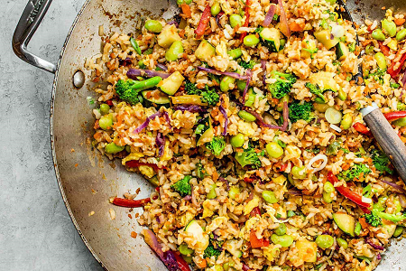

VEGETARIAN RICE

Ingredients
- 1/2 chooped onion
- 1 chopped garlic clove
- 1 chopped courgette
- 1 grated carrot
- 1 chopped red or yellow pepper
- 75g frozen peas
- 1/2 tin if chopped tomatoes
- 350ml vegetable stock
- 150g dried brown rice
- 1 tbsp of dried parsely
- 1 tsp tumeric
- Seasoning
Methods
Serves 2: Prep time 10mins: Cook time 25mins.
- Add onion, garlic and tumeric to pan with a splash of veg stock.
- Stirring, cook gently for a 3 mins then add the chopped courgette, grated carrot and chopped pepper.
- Stir well for a further 3mins then add the dried rice.
- Stir rice in well with the vegetables.
- Once rice is distributed well throughout the mixture, add the stock- leave to boil.
- Once boiled immediately turn heat down to simmer and cover. Cook for 10mins.
- Add in chopped tomatoes and frozen peas and stir.
- Cover and simmer for a further 10mins.
- Once cooked stir in dried parsely with seasoning.
- Spoon rice into 2 dishes.
Back to Recipe List.